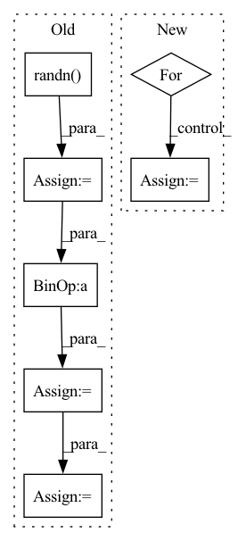

Pattern ID :35652
Before Change
if not noise:
B, _, H, W = x.size()
noise = torch.randn( B, 1, H, W, device=x.device)
noise = self.scale_noise(noise)
x = x + noise
x = self.activation(x)
return x
After Change
])
def forward(self, x, y):
for module in self.block:
if isinstance(module, ModulatedConv2d):
x = module(x, y)
else:
x = module(x)
return x
In pattern: SUPERPATTERN
Frequency: 3
Non-data size: 7
Instances Fragment ID: 101557068
Project Name: stomoya/animeface
Commit Name: b3652bae109c713da926d5532eb014b02135da52
Time: 2020-12-14
Author: blackie0110@gmail.com
File Name: implementations/StyleGAN2/model.py
M Class Name: StyleBlock
N Class Name: StyleBlock
M Method Name: forward(3)
N Method Name: forward(4)
M Parent Class: nn.Module
N Parent Class: nn.Module
M File Name: implementations/StyleGAN2/model.py
N File Name: implementations/StyleGAN2/model.py
M Start Line: 207
M End Line: 220
N Start Line: 173
N End Line: 179
Before Change
// 3. optionally sample variance
variance = 0
if eta > 0:
noise = torch.randn( image.shape, generator=generator) .to(image.device)
variance = self.noise_scheduler.get_variance(t, num_inference_steps).sqrt() * eta * noise
// 4. set current image to prev_image: x_t -> x_t-1
image = pred_prev_image + variance
// decode image with vae
image = self.vqvae.decode(image)After Change
self.scheduler.set_timesteps(num_inference_steps)
for t in tqdm.tqdm(self.scheduler.timesteps):
residual = self.unet(image, t)
if isinstance(residual, dict):
residual = residual["sample"]
// 2. predict previous mean of image x_t-1 and add variance depending on eta
// do x_t -> x_t-1
image = self.scheduler.step(residual, t, image, eta)["prev_sample"]
// decode image with vae
image = self.vqvae.decode(image) Fragment ID: 101557132
Project Name: huggingface/diffusers
Commit Name: f448360bd0dfe5e28ee65ab2130532db91d5eafe
Time: 2022-07-15
Author: patrick.v.platen@gmail.com
File Name: src/diffusers/pipelines/latent_diffusion_uncond/pipeline_latent_diffusion_uncond.py
M Class Name: LatentDiffusionUncondPipeline
N Class Name: LatentDiffusionUncondPipeline
M Method Name: __call__(6)
N Method Name: __call__(6)
M Parent Class: DiffusionPipeline
N Parent Class: DiffusionPipeline
M File Name: src/diffusers/pipelines/latent_diffusion_uncond/pipeline_latent_diffusion_uncond.py
N File Name: src/diffusers/pipelines/latent_diffusion_uncond/pipeline_latent_diffusion_uncond.py
M Start Line: 31
M End Line: 71
N Start Line: 31
N End Line: 50
Before Change
if not noise:
B, _, H, W = x.size()
noise = torch.randn( B, 1, H, W, device=x.device)
noise = self.scale_noise(noise)
x = x + noise
x = self.activation(x)
return x
After Change
])
def forward(self, x, y):
for module in self.block:
if isinstance(module, ModulatedConv2d):
x = module(x, y)
else:
x = module(x)
return x
Fragment ID: 101557007
Project Name: stomoya/animeface
Commit Name: b3652bae109c713da926d5532eb014b02135da52
Time: 2020-12-14
Author: blackie0110@gmail.com
File Name: implementations/StyleGAN2/model.py
M Class Name: StyleBlock
N Class Name: StyleBlock
M Method Name: forward(3)
N Method Name: forward(4)
M Parent Class: nn.Module
N Parent Class: nn.Module
M File Name: implementations/StyleGAN2/model.py
N File Name: implementations/StyleGAN2/model.py
M Start Line: 207
M End Line: 220
N Start Line: 173
N End Line: 179
Before Change
// 3. optionally sample variance
variance = 0
if eta > 0:
noise = torch.randn( image.shape, generator=generator) .to(image.device)
variance = self.noise_scheduler.get_variance(t, num_inference_steps).sqrt() * eta * noise
// 4. set current image to prev_image: x_t -> x_t-1
image = pred_prev_image + variance
return image
After Change
// set step values
self.scheduler.set_timesteps(num_inference_steps)
for t in tqdm.tqdm(self.scheduler.timesteps):
// 1. predict noise residual
with torch.no_grad():
residual = self.unet(image, t)
if isinstance(residual, dict):
residual = residual["sample"]
// 2. predict previous mean of image x_t-1 and add variance depending on eta
// do x_t -> x_t-1
image = self.scheduler.step(residual, t, image, eta)["prev_sample"]
return {"sample": image}
Fragment ID: 101557128
Project Name: huggingface/diffusers
Commit Name: f448360bd0dfe5e28ee65ab2130532db91d5eafe
Time: 2022-07-15
Author: patrick.v.platen@gmail.com
File Name: src/diffusers/pipelines/ddim/pipeline_ddim.py
M Class Name: DDIMPipeline
N Class Name: DDIMPipeline
M Method Name: __call__(6)
N Method Name: __call__(6)
M Parent Class: DiffusionPipeline
N Parent Class: DiffusionPipeline
M File Name: src/diffusers/pipelines/ddim/pipeline_ddim.py
N File Name: src/diffusers/pipelines/ddim/pipeline_ddim.py
M Start Line: 35
M End Line: 77
N Start Line: 42
N End Line: 59